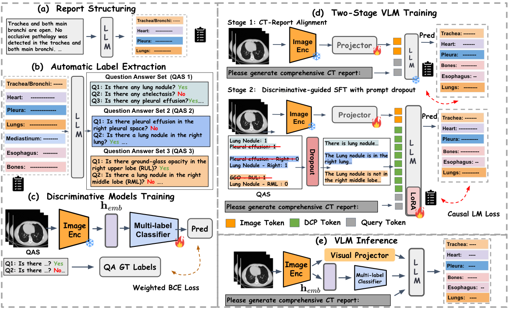
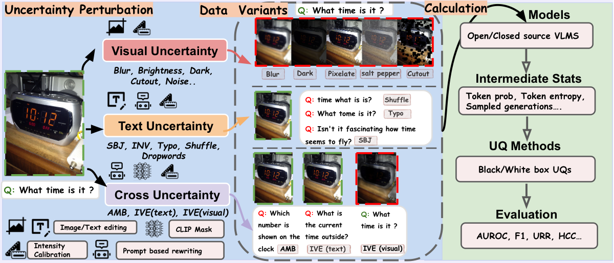
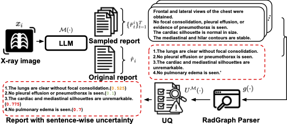
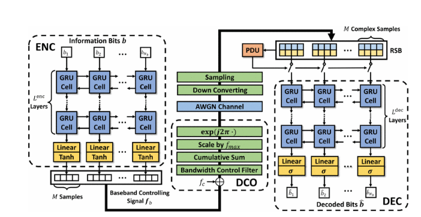

Ph.D. Candidate
Electrical & Computer Engineering
Boston University
About Me
I am Chenyu Wang, a fourth-year PhD Candidate in ECE at Boston University, co-advised by Prof. Wenchao Li
and Prof. Kayhan Batmanghelich.
My research is at the intersection of multimodal LLMs and healthcare. I've been working on uncertainty quantification, hallucination detection, and more recently agentic verification with tool use.
I study these problems in radiology report generation from 2D X-ray and 3D CT — a domain that demands both fine-grained visual grounding and factual correctness.
Prior to joining Boston University, I earned a Master’s degree in ECE from the University of Michigan, Ann Arbor, and a Bachelor’s degree from Hangzhou Dianzi University.
I'm always open to collaborations and discussions. Feel free to send me an email if you are interested!
News
- Oct 2026 I will be joining Amazon as an Applied Scientist Intern in Santa Clara, CA.
- Jun 2026 One collaborative paper has been accepted to ECCV 2026.
- Apr 2026 One paper has been accepted to the CVPR 2026 TRUE-V Workshop.
- Apr 2026 One paper in collaboration with Siemens Healthineers is now available as a preprint.
- Feb 2026 One collaborative paper has been accepted by Nature Biomedical Engineering.
- Jul 2025 One paper has been accepted to Findings of ACL 2025.
- Apr 2025 One paper has been accepted to Findings of NAACL 2025.
- Sep 2023 Joined Boston University as a PhD student in ECE.
Publications





Misc
- When I was young, I played League of Legends and reached ChallengerChallengerMaster on the Chinese server, mostly playing Heimerdinger and Ekko, and sometimes Vayne.
- I also play Path of Exile, which ate up tons of my time before my PhD.